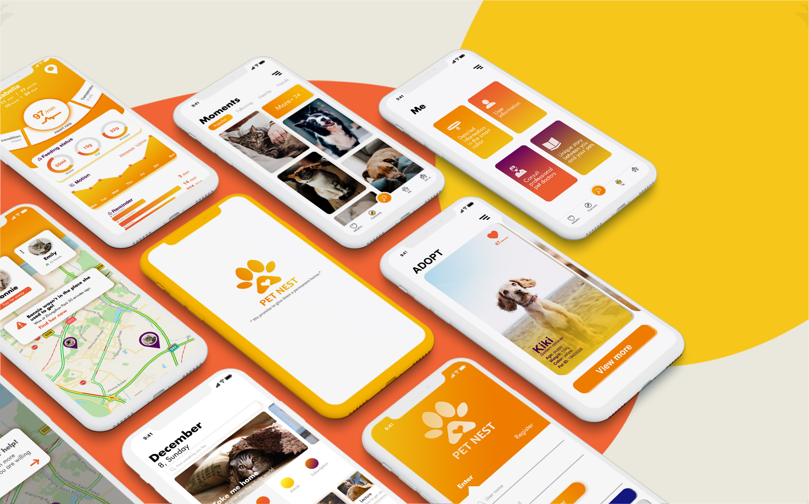
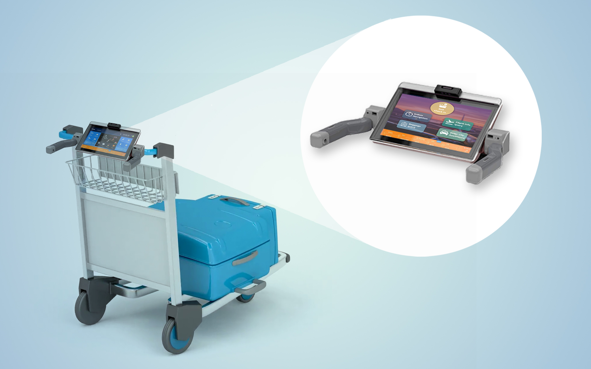

Spine
A medical app that helps people manage chronic low back pain.
UX&UI | Mobile | May 2020

Pet Nest
A rescue platform which aims to improve the living environment of stray animals.
UX&UI | Mobile | Dec 2020

Collector
An interaction design for visitors to better immersive in the museum context and customize their touring experience in Nanjing Museum.
UX&UI | Interactive Digital Signage | Mobile | Sep 2019

E-Screen
A digital screen applicable for various styles of airport trolleys which can realize online check-in, flight query and indoor navigation.
Product Design | UX&UI | Sep 2019